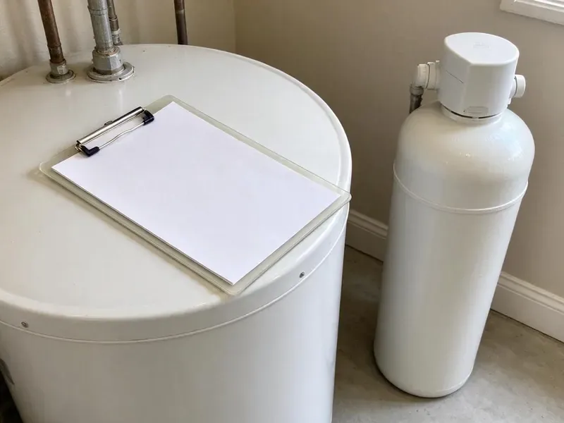

Water Softener Maintenance in Elk Grove, CA
Yearly softener service in Elk Grove, CA from licensed plumbers who test the water first.
- Injector and Screen Cleaning
- Fleck and Clack Valve Rebuilds
- Written Quote First
- Next-Day Softener Visits

Book Water Softener Maintenance in Elk Grove, CA.
Ask for an honest price on a full softener service.
Keeping Softeners Soft in Elk Grove, CA
Water softeners have a handful of parts that wear out, and FBL Plumbing carries most of them on the truck for the Fleck and Clack valves found in Elk Grove homes. Seals, spacers, injector screens, brine valves and float assemblies. Most repairs are finished the same day because of it.
Work we handle every week:
- Brine Well and Float Service
- Injector, venturi and valve seal and spacer service
- Brine tank cleanout, salt mush removal and safety float adjustment

Additional Plumbing Maintenance Services in Elk Grove, CA
Our maintenance and specialty plumbing services in Elk Grove, CA catch small problems before they become emergencies.


Customers
Why Choose FBL Plumbing for Water Softener Maintenance in Elk Grove, CA?
Scale is slow damage. Hard water lays scale on the bottom of a tank heater, and the burner has to heat through that crust. A working softener stops that at the source, along with the crust on faucet aerators.
- Smarter Salt Use, We set the salt dose so you buy fewer bags without losing softness.
- Longer Softener Life, A softener that gets a checkup every year often runs well past the 10-year mark.
- Less Scale, Soft water keeps scale off faucets and showerheads and out of the water heater.
Citywide Coverage
Softeners put in by another company are fine with us anywhere in Elk Grove. Nobody needs to dig up the original installer's paperwork. A model number or a photo of the valve head lets us load the matching seal kit, and most of those parts ride on the truck already.
Experienced Team
Each technician is background-checked before hiring and keeps training on new valve models and control boards as manufacturers release them. Valve makers like Clack and Fleck revise their designs every few years. The older 5600 mechanical timers still get serviced too.
Safety-First Approach
Before we open a valve, the water to the softener goes to bypass and pressure gets relieved at a faucet. That keeps the room dry when the piston comes out. We put down drop cloths first.
Trusted Certified Elk Grove Plumbing Services Professionals
At FBL Plumbing, we are proud to offer certified plumbing services throughout Elk Grove, CA. Those papers on the wall mean something. Our plumbers hold recognized industry credentials, and they follow strict safety and quality rules on every repair, installation and maintenance call we run.
Call Us Now PHCC Plumbing Contractor Recognition
PHCC Plumbing Contractor Recognition Better Business Bureau (BBB) Accreditation
Better Business Bureau (BBB) Accreditation Angi Certified Pro
Angi Certified Pro ISO 9001 Quality Management Certification
ISO 9001 Quality Management CertificationWater Softener Maintenance in Elk Grove, CA, Piece by Piece
Control Valve and Injector Cleaning in Elk Grove, CA
Brine draw depends on a venturi injector, a tiny nozzle and throat that pulls brine out of the salt tank as water rushes past. It does not take much debris to block it. We pull the injector and screen, clean them, and replace the seals and spacers on valves like the Fleck 5600 and Clack WS1 if they are worn.

Hardness Testing at the Tap in Elk Grove
We test with a titration kit, counting drops until the sample changes color, because test strips are too rough for setting a valve. Raw water gets tested from an unsoftened hose bib or with the valve on bypass. Softened water comes from the kitchen tap.
Yearly Maintenance Plans in Elk Grove, CA
Plans take the remembering off your plate. You get a reminder call before each yearly visit, and if the control valve fails between visits you get priority booking. Repairs found during a plan visit are billed at a reduced rate.
Full-System Softener Inspections in Elk Grove
An inspection covers more than the two tanks. We trace the inlet and outlet plumbing, the bypass, the drain line and the brine overflow. Green crust on copper fittings, a drip at the bypass or a drain line jammed down into a standpipe all go on the written report.
Softener Brands We Work On in Elk Grove
Most softeners sold in the last 20 years run on a handful of valve platforms, mainly Fleck, Clack, Autotrol and a few proprietary heads. Once you know the valve, the name on the cabinet matters less. Kinetico and Culligan use their own designs, so we check part availability before quoting.
Commercial Twin-Tank Maintenance in Elk Grove
Salons, car washes, hotels and restaurants put far more gallons through a softener than any house does, and a hard-water day can mean spotted glassware or a scaled ice machine. Twin-tank and progressive-flow systems need closer checks on the meter and the tank changeover. We service them every one to three months, depending on volume.
Control Valve and Timer Diagnostics in Elk Grove, CA
The control valve runs every stage of regeneration, from backwash through brine draw to the final refill. We step it through each cycle by hand and watch for a motor that stalls, a drive gear that skips, a piston that drags or a drain that never shuts off. A worn piston is a common find.

Regeneration Programming and Hardness Testing in Elk Grove, CA
Plenty of softeners still run factory settings. The installer never changed them, or the household grew and nobody updated the valve. We enter your raw hardness and household size, then set a metered valve to regenerate by gallons used instead of every few days on a timer.
Water Softener Maintenance Near Me in Elk Grove, CA
Garage, basement, utility closet or side-yard enclosure, we work wherever the softener sits. We bring drop cloths and a wet-dry vac. Outdoor units get a closer look at the control head cover and the wiring, since weather breaks them down sooner.
Our plumbers work in the Elk Grove area every weekday, so a softener call usually gets on the schedule within a day or two. Same-day slots open up often. A leaking brine tank or a valve stuck in backwash gets moved up the list.
FBL Plumbing at a Glance
- Fully licensed plumbing team covering Elk Grove, CA
- Same-day appointments and 24/7 emergency response
- Clear written estimates, no hidden fees
- 4.8-star rated by 834+ Northern California customers
Elk Grove Map
Elk Grove Information
- Population
- 178,444
- Area codes
- 916/279/530
- Service area
- Elk Grove and towns within a 40 mile drive
- Nearby
- Florin, Sacramento, Arden-Arcade, West Sacramento
Most softener trouble in Elk Grove, CA traces back to a clogged injector or a salt bridge, and both are inexpensive repairs compared with descaling a water heater.
Expert Services
Call FBL Plumbing for reliable plumbing work done by licensed pros in Elk Grove, CA.
Our Specialized Plumbing Services in Elk Grove, CA
At FBL Plumbing, we handle the full list of plumbing services across Elk Grove, CA. We go from leak detection all the way to full system installations, for homes and commercial buildings, and we do it quickly at a fair price. Explore our core services below:


What Happens During Water Softener Maintenance in Elk Grove, CA
Test, clean, program, retest.
Call for a Price
Call (669) 319-2034 with the brand and age of the softener if you know them. You get a flat price and an appointment that fits your week.
Test and Clean
We test hardness, clean the brine tank and service the valve and injector. Resin and bypass get checked too.
Set and Verify
Regeneration gets programmed to your water and usage, followed by a manual cycle. A final hardness test shows the water is soft.
Frequently Asked Questions About Water Softener Maintenance in Elk Grove
Standard visits typically cost $125 to $250. A valve rebuild adds roughly $100 to $250. Resin replacement is the big-ticket item at $300 to $700, which is still well under the price of a new system.
About an hour for a unit in decent shape. Add time for a packed brine tank or a valve rebuild. Surprises do happen, like a cracked distributor tube that shows up as resin beads in the faucet aerators, and those can turn a one-hour call into a second visit.
Yes, our maintenance work is guaranteed for a set period after the visit. A repeat of the same problem inside that period gets a return visit, and you are not charged for the trip or the labor. Parts also keep their own manufacturer warranty.
Spots on glassware usually show up first. Towels turn stiff and soap seems to take more to work up a lather. Another tell is a salt level that never goes down, a sign the unit has stopped pulling brine, or a hum from the valve with no cycle change.
Not for routine service in most places. A full replacement or a change to the drain connection can require one, depending on what the local building department asks for. We check before the job and pull the permit ourselves if one is required.
A few inches of water can be normal, depending on the design. A tank that keeps filling, though, usually points to a clogged injector, a stuck float, a faulty refill flow control or a restricted drain line. We clear the cause and reset the valve.
Water hardness in Northern California varies a lot by source, with snowmelt-fed systems running soft and many inland groundwater systems running hard. Calcium and magnesium are what leave scale in pipes and water heaters, and a softener that quits regenerating lets them right back in. A yearly check catches that early.
Most visits run about an hour, including both hardness tests and a manual regeneration. Rebedding the resin tank tacks on about an hour more.
What People Are Saying About Our Plumbing Experts?

Kevin O.
Before buying our house I paid for a sewer camera inspection. FBL Plumbing found a belly in the line that held standing water about forty feet from the cleanout. We used the video to get the sellers to fix it before closing.
Sewer Camera Inspection · West Sacramento, CA
Nathan E.
Our tankless heater kept throwing an error code and shutting off mid shower. The tech flushed the heat exchanger, which was full of scale, and replaced a bad flow sensor. Hot water has been steady for half a year now.
Water Heater Repair · Elk Grove, CA
Megan L.
Our upstairs tub drained so slowly that every shower turned into a bath. FBL Plumbing pulled a wad of hair out of the stopper and then snaked the line past the trap. Three months later it still drains fast.
Drain Cleaning · Sacramento, CAJames P.
Our restaurant had a slow leak at the hand sink that was rotting the cabinet base. FBL Plumbing came in at six in the morning before prep, replaced the trap and both supply lines, and was packed up before my first cook clocked in.
Commercial Plumbing · Elk Grove, CA
Greg S.
I manage a small strip center with six tenants. FBL Plumbing handles our annual backflow testing and fixed a recurring clog in the shared sewer line that had been backing into the nail salon. Their reports come in clean and on time.
Commercial Plumbing · Sacramento, CABrian W.
I smelled gas behind the dryer and called right away. The plumber found a corroded flex connector, replaced it, and pressure tested the whole line before turning the gas back on. He let me watch the gauge hold steady for fifteen minutes.
Gas Line Repair · West Sacramento, CA